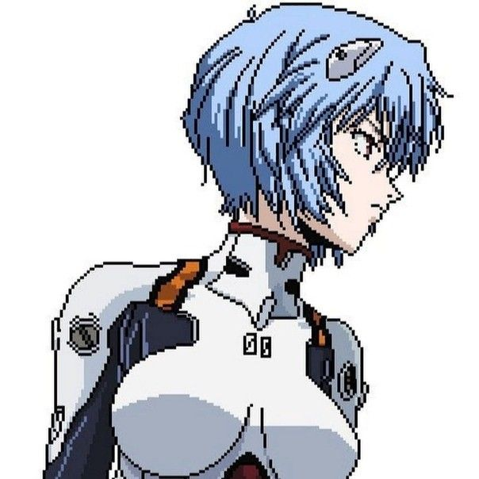
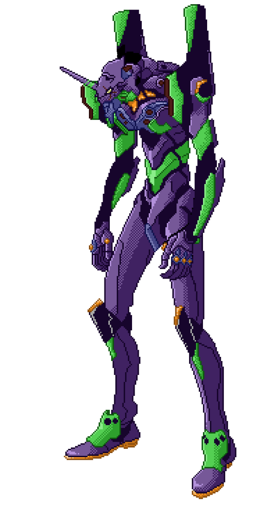

Пиксельная графика(от англ. pixel — сокращение от pix element) — форма цифрового изображения, созданного на компьютере с помощью растрового графического редактора, где изображение редактируется на уровне пикселей (точек), а разрешение изображения настолько малó, что отдельные пиксели чётко видны. На старых (или на неполнофункциональных) компьютерах, в играх для Game Boy, играх для старых игровых приставок и многих играх для мобильных телефонов в основном используется пиксельная графика, так как это единственный способ сделать чётким небольшое изображение при малом разрешении экранов, характерном для этих устройств.
Содержание:- Отличительные черты пиксельной графики
- Методы рисования
- Хранение
- Классификация
- История
- Сообщества
- Алгоритмы автоматического масштабирования
- Пиксельная графика на движке wikimedia
- См. также
- Примечания
- Ссылки
Отличительные черты пиксельной графики
Распространено заблуждение, что любой рисунок или эскиз, сделанные с использованием растровых редакторов — пиксельная графика. Это неверно, «пиксельное» изображение отличается от «непиксельного» технологией — ручным редактированием рисунка пиксель за пикселем. Поэтому пиксельный рисунок отличается от других видов компьютерного искусства небольшими размерами, ограниченной цветовой палитрой и (как правило) отсутствием сглаживания.
Пиксельная графика использует лишь простейшие инструменты растровых графических редакторов, такие как «карандаш», «прямая» или «заливка». Поэтому встречаются шедевры пиксельной графики, сделанные в Microsoft Paint и других неполнофункциональных редакторах.
В любом случае, использование инструментов, не работающих с отдельными пикселями (например, «Кисть») и автоматических фильтров (таких, как сглаживание) считается неприемлемым в «настоящем» искусстве пиксельной графики — такие инструменты добавляют новые пиксели автоматически, нарушая аккуратное ручное размещение. «Правилом хорошего тона» считается использовать минимальное число цветов; в идеале — стандартные 16 цветов, доступные на подавляющем большинстве видеоподсистем, даже самых ранних: в них три бита кодируют сигналы R,G,B и четвёртый бит кодирует яркость.Пиксельная графика напоминает некоторые классические виды изобразительных искусств, такие как вышивка крестиком, мозаика и вышивка бисером — так как рисунок складывается из небольших цветных элементов, аналогичных пикселям современных мониторов.
Достоинства
- Один из самых простых в изучении стилей компьютерного искусства (простую пиксельную картинку можно нарисовать, даже не имея особых художественных способностей).
- Естественный выбор на ограниченных палитрах и сверхнизких разрешениях, где важен каждый пиксель.
- Требует мало памяти за счёт применения палитровых форматов с небольшим количеством цветов.
- Даже при очень плохой цветопередаче пиксельный рисунок не теряет выразительности.
- Хорошо выглядит на экранах с чёткими границами пикселей (наподобие ЖК)
Недостатки
- В эпоху TrueColor-мониторов и видеосопроцессоров с аппаратным альфа-смешиванием выразительнее смотрятся другие стили (хоть на низких разрешениях всё равно приходится выравнивать линии по пикселям).
- Плохо переносит автоматическое масштабирование (при изменении разрешения картинку требуется перерисовывать). На современных (2016) ПК разрешение мониторов достаточно высокое, чтобы пиксельную игру можно было запустить во весь экран в масштабе 2:1 и более (см. ниже); если это невозможно — остаётся только запускать игру в окне.
- На некачественных мониторах (чересстрочные ЭЛТ, некоторые ЖК с аналоговым входом или нехваткой цифровой полосы пропускания) «сетчатое тонирование» (см. ниже) может мерцать.
История
Термин pixel art был впервые использован Аделью Голдберг и Робертом Флегалом из Исследовательского центра Пало-Альто корпорации «Xerox» в 1982 году. Хотя сама графика использовалась ещё за 10 лет до этого в программе Ричарда Шоупа, в Xerox PARC и т. п.
Пиксельная графика широко применялась в 1980-е годы на компьютерах и приставках с ограниченными палитрами. Появление изменяемых 256-цветных палитр положило конец засилью пиксельного рисунка в играх; с тотальным распространением true color пиксельный рисунок был потеснён и с рабочих столов ОС.
Тем не менее, на портативных устройствах (мобильные телефоны, PSP и Nintendo DS) пиксельный рисунок широко распространён и по сей день. Иногда пиксельная графика используется в рекламных баннерах.
Современная пиксельная графика используется как ответная реакция любителей игр/рисунков на преобладание трёхмерной графики. Некоторые энтузиасты используют её как подражание прошлому. А другие считают, что она возрождает традиции приставочных игр второго и третьего поколения, в которых графика уже стала выглядеть эстетично.
Значки для операционных систем с ограниченными функциями отображения тоже представляют собой пиксельную графику. В Windows значки «рабочего стола» — это растровые изображения различных размеров, наименьшие из которых иногда не просто уменьшенные варианты, а самостоятельные образчики пиксельной графики. На «рабочих столах» GNOME и KDE изображения представлены прежде всего SVG, но и они содержат пиксельную графику в PNG для небольших размеров, таких как 16×16 и 24×24. Другим применением на современных компьютерах являются значки для сайтов и различных списков предпочтений (англ. favicon).
Evangelion в исполнении pixel art
- Rei Ayanami

Рей Аянами (яп. 綾波レイ Аянами Рэй) — один из центральных персонажей аниме-сериала и манги «Евангелион», вышедших в 1995 году. Также появляется в аниме, манге и играх, созданных по мотивам оригинального произведения, сюжет которых не связан прямо с оригинальной работой. Четырнадцатилетняя девочка. Первая из Детей, способных управлять боевыми биороботами «Евангелионами» (сокращённо — «Евами»), сделанными организацией Gehirn и используемыми её преемником Nerv для защиты от таинственных созданий — Ангелов. Рей также называют «Первое Дитя» (англ. First Children) (в Rebuild of Evangelion — «Первая Девочка» (яп. 第1の少女 дай ити но сё:дзё)). Её озвучивает одна из самых популярных на момент выхода сериала сэйю, Мэгуми Хаясибара. В 1995 году Хаясибара заняла второе место в гран-при журнала Animage (первое место заняла сэйю Синдзи Икари, Мэгуми Огата). В 1996 году, после завершения сериала, Хаясибара поднялась до первого места (второе место — сэйю Синдзи), а также получила награду Animation Kobe.
- Unit-01

Evangelion Unit-01 エヴァンゲリオン初号機, Эвангэрион Сёго:ки), также известный как Ева-01 — флагманская меха саги «Евангелион». Еву-01 пилотирует главный герой сериала Синдзи Икари, а внутри находится душа его матери, Юи Икари.
Ева-01 была выпущена филиалом Gehirn в Хаконэ в качестве тестового типа Евангелиона. В отличие от других Ев, тело Евы-01 было создано непосредственно из тела Лилит, а посему меха носит название «потомство» Лилит или её «клон».На физическом уровне Ева-01 имеет те же характеристики, что и основанные на Адаме (т.е. любые другие) Евангелионы, поэтому точный характер связи Евы-01 и Лилит остаётся неизвестным. Ева-01 получила свою душу в результате контактного эксперимента с Юи Икари в 2004 году, но сама меха не была закончена вплоть до 2014 года.
Как и остальные Евангелионы, Ева-01 была якобы создана как оружие против Ангелов, и, таким образом, она стала первой Евой, сразившейся с ангелом (с Сакиилом). Она также известна своей способностью пробуждения берсерка — способностью двигаться без источника питания (до того, как получила S² двигатель от Зеруила) при этом будучи единственным Евангелионом, которому удалось направить эту силу непосредственно в бой, в то время как берсерк Евы-00 ограничивался только выходом из-под контроля во время экспериментов по синхронизации, а Ева-02 смогла двигаться буквально за секунды до своего полного уничтожения.